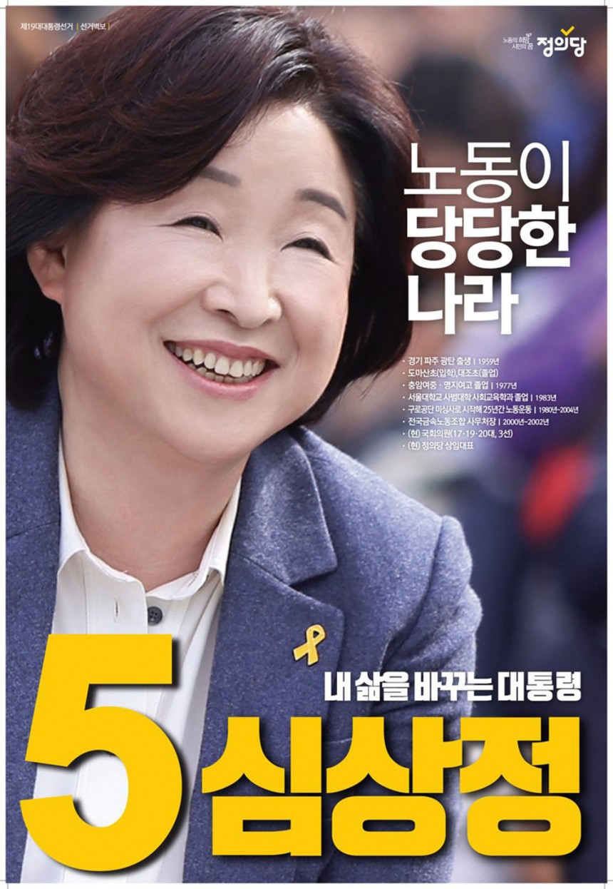

주요 공약
- 기후위기 극복을 위한 정의로운 탈탄소사회로의 전환
- 노동자, 자영업자, 농어민의 일할 권리와 기본권 보장
- 성차별, 폭력없는 성평등 사회 실현 / 청년, 청소년의 다양성 존중과
미래사회 보장
- 부동산 불평등 해소·투기 근절, 기후위기·차별 해소를 위한 조세 개혁
- 불공정 해소, 미래를 대비하는 경제개혁
- 국민건강권 및 전국민 돌봄 보장
- 맞춤교육, 문화다양성, 표현의 자유가 보장되는 나라
- 모두가 존중받고 안전한 공동체
- 특권과 부패가 없는 정의로운 대한민국
- 평화와 공생의 한반도와 국제사회